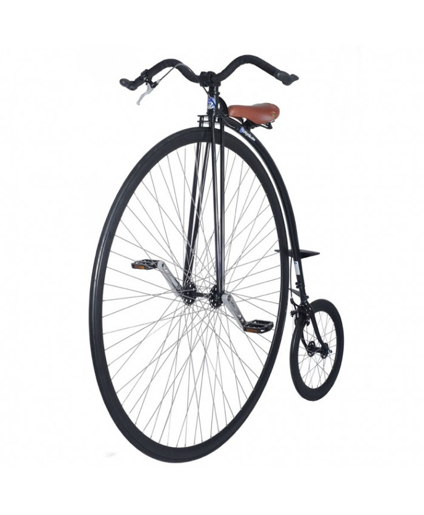

El ciclismo es un deporte en el que se utiliza una bicicleta para recorrer Circuitos al Aire Libre o en Pista Cubierta y que engloba diferentes especialidades. Bienvenidos a nuestra web donde llevaremos el día de todo lo que ocurre en el ciclismo mundial.
Competición
El ciclismo de competición es un deporte en el que se utilizan distintos tipos de bicicletas. Hay varias modalidades o disciplinas en el ciclismo de competición como ciclismo en carretera, ciclismo en pista, ciclismo de montaña, trial, ciclocross y BMX y dentro de ellas varias especialidades. El ciclismo de competición es reconocido como un deporte olímpico. La Unión Ciclista Internacional es el organismo gobernante mundial para el ciclismo y eventos internacionales de ciclismo de competición.
Entrenamiento
Durante las últimas décadas se han ido perfeccionando las técnicas de entrenamiento y nutrición ciclista facilitando todo tipo de recursos a los aficionados para poder avanzar en su preparación.
Historia
Todos los inventos humanos son el resultado de intentar satisfacer una necesidad. Aunque, a veces, la falta de ingenio o la falta de tecnología, puede no permitirnos una determinada satisfacción. También se dan casos en los que los inventos aparecen como evolución de lo que inicialmente era un divertimento intelectual. La bicicleta no empezará a desarrollarse como tal hasta finales del siglo XVIII.
 Senderismo
El senderismo es una actividad deportiva no competitiva que se realiza sobre senderos balizados y homologados por el organismo competente de cada país.El senderismo busca acercar a las personas al medio natural y al conocimiento de la zona a través del patrimonio y los elementos etnográficos y culturales tradicionales, utilizando preferentemente el sistema tradicional de vías de comunicación, tales como cañadas reales, caminos vecinales y senderos. El senderismo constituye una simbiosis entre deporte, cultura y medio ambiente. Aunque sin carácter competitivo, el senderismo cuenta en ocasiones con eventos deportivos con clasificaciones por orden de llegada o por número de caminatas finalizadas como, por ejemplo, la Copa Catalana de Caminatas de Resistencia, disputada en Cataluña, España.